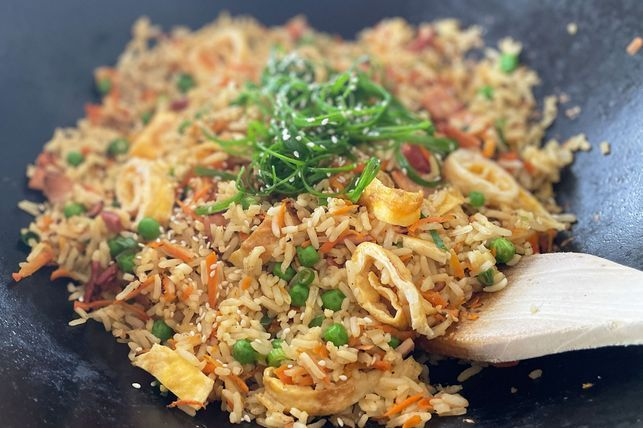

Below is the EASY FRIED RICE and how it is prepared

Ingredients
- 1 cup Coles Long Grain White Rice
- 2 tsp vegetable oil
- 2 eggs, lightly whisked
- 2 bacon rashers, chopped
- 1 carrot, peeled and grated
- 2 shallots, trimmed, finely sliced
- 1/2 cup frozen peas, thawed
- 1 tbsp soy sauce
- Sesame seeds, to serve
- Shallots, sliced, extra, to serve
PREPARATION PROCESS
- Step 1
Cook the rice in a large saucepan of boiling water for 12 minutes or until tender. Drain and leave to cool.
- Step 2
Heat oil in non-stick wok or large frying pan over medium heat. Add eggs. Swirl over base to form an omelette. Cook for 2 minutes or until set. Transfer to a chopping board. Set aside to cool slightly. Roll up and thickly slice.
- Step 3
Add bacon to wok. Cook 4 minutes until light golden. Add carrot. Stir fry 1 minute. Add shallots, peas and rice. Cook, stirring, 3-4 minutes. Add egg and soy sauce. Stir until heated through. Sprinkle with sesame seeds and top with extra shallots. Serve immediately.